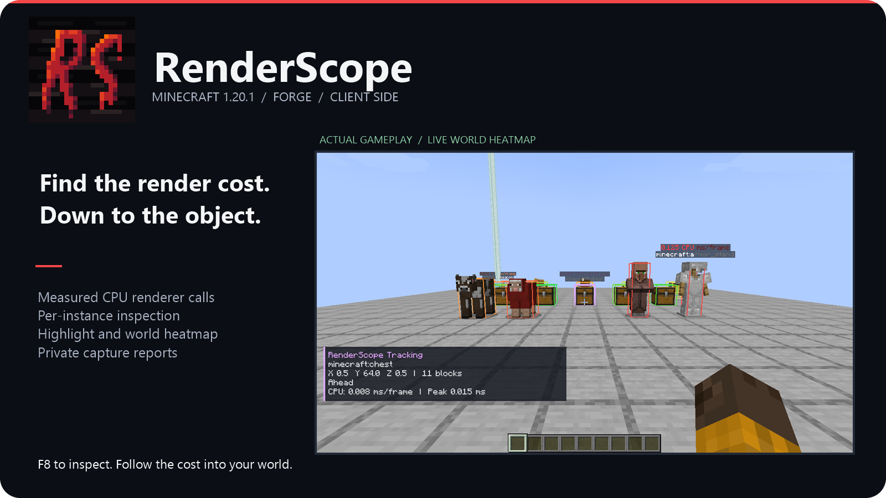
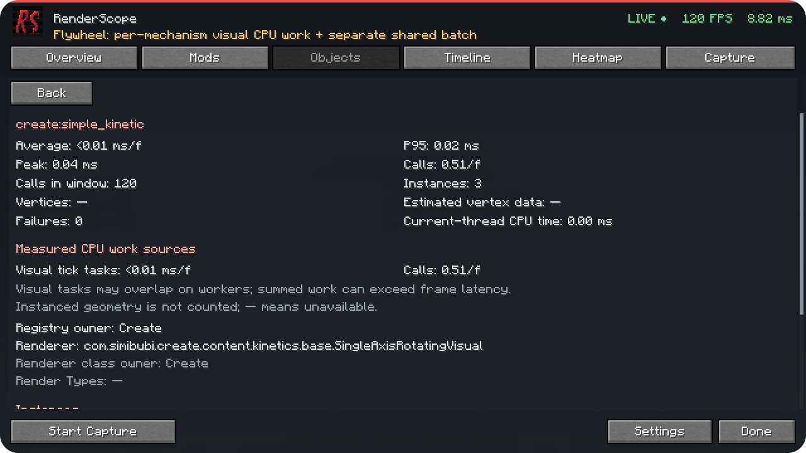
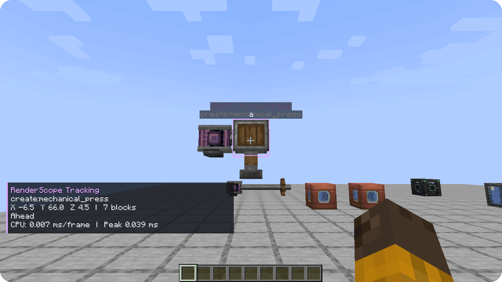

Find the object behind an expensive renderer call.
Minecraft 1.20.1 · Forge 47.4.10 / NeoForge 47.1.106 · Java 21 · Client-side
RenderScope connects measured rendering work to a mod, an object type and a specific instance in your world. Investigate a costly renderer, select its entity or block entity, and see exactly where that object is.
Open F8 or Esc → RenderScope. Choose a mod in Mods, inspect a type in Objects, then select an instance. Average/P95/peak time, calls, renderer implementation and CPU work sources show what was measured.

Highlight draws the selected bounding box. Track adds direction and distance. The heatmap compares nearby measured instances with relative colors; Inspect reads the object under your crosshair. Filters control categories, distance, cost, labels and through-wall display.

Overview shows FPS, frame-time percentiles and measured offenders. Timeline keeps about 30 seconds of history. Record 5 / 10 / 30 seconds or stop manually, then export JSON to your profile's renderscope-reports folder.
Reports stay local. Positions and dimensions are off by default. Player names, server addresses, world names, chat, UUIDs and absolute paths are excluded. Versions, installed mod names/versions and measured CPU sources/phases are included.
renderscope-forge-0.2.0+mc1.20.1.jar; NeoForge — renderscope-neoforge-0.2.0+mc1.20.1.jar.mods folder. Do not install both builds together. MixinExtras is bundled.The server does not need RenderScope. English and Russian UI are included. Profiling continues with the screen closed.
Timing Only measures individual renderer calls, supported Flywheel visual CPU tasks and attributed Mekanism deferred callbacks. Full adds observed standard BufferBuilder geometry and real asynchronous shared Flywheel GPU timings on supported contexts.
Visual CPU work and shared CPU/GPU batches are separate. Parallel CPU intervals can overlap; their sum may exceed frame latency. Shared GPU time and instanced vertices are not divided among objects. The GPU view is live only; captures export CPU sources/phases. “Estimated vertex data” is not GPU uploads or VRAM.
The optional visual integration targets Flywheel 1.0.5. Virtual contraption block entities do not receive separate world-position attribution. Terrain, particles, GUI and standalone shader passes are outside this profiling scope. RenderScope does not force a different Flywheel backend.
The installed Forge production JAR was tested with Create 6.0.8 / Flywheel 1.0.5 / Ponder 1.0.91 and Mekanism 10.4.16.80: real rotating mechanisms, an animated press, filled tanks and deferred energy-cube rendering. This is a pinned scene, not a general shader/renderer compatibility matrix.
All Create/Mekanism screenshots and animations shown here were recorded on Forge. The NeoForge build passed a separate vanilla-client baseline; the Create/Mekanism compatibility scene was not tested on NeoForge.
Найдите конкретный объект с дорогим рендером. Откройте F8 → Mods → Objects, выберите экземпляр и нажмите Highlight или Track. Теплокарта сравнивает измеренную стоимость объектов, Inspect показывает данные под прицелом.
Нужны Minecraft 1.20.1, Java 21 и Forge 47.4.10 либо NeoForge 47.1.106. Скачайте отдельный JAR для своего загрузчика и положите только его в клиентскую папку mods: сборки Forge и NeoForge нельзя устанавливать вместе. Мод устанавливается только на клиент. Интерфейс доступен на русском. Capture записывает 5/10/30 секунд или до ручной остановки; JSON сохраняется локально, координаты и dimension по умолчанию выключены.
Измеряются реальные CPU-вызовы рендереров и поддерживаемые visual-задачи. Общая Flywheel GPU-сводка в Full показывается отдельно; её время и инстансированная геометрия не распределяются между объектами.
Скриншоты и анимации Create/Mekanism сняты на Forge. Для NeoForge проверен отдельный базовый сценарий с ванильными объектами; сцена совместимости с Create/Mekanism на нём не тестировалась.
RenderScope uses the custom RenderScope Source-Available License 1.0. Personal use, private use as a tool at work, modification and free redistribution/inclusion are allowed under its terms. Selling the code/mod, including it in paid projects/modpacks/bundles, or charging for access requires the owner's prior written permission. Keep license/notices and identify modified versions. Unconditional voluntary donations and ordinary ads on freely accessible projects are allowed.
Исходники доступны: разрешены личное и бесплатное использование, изменения и бесплатное включение в проекты. Для продажи, включения кода/мода в платные проекты/сборки и платного доступа нужно предварительное письменное разрешение владельца. Личное использование как инструмента, в том числе на работе, разрешено.